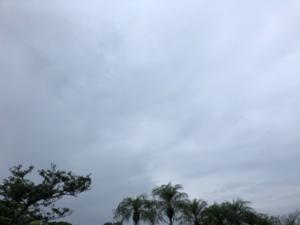
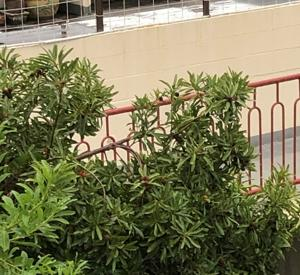

うるがいの話 ある日
最新: 野菜のビタミン【うるがいの話 ある日】とは 一日だけのプログです
『うるがいの話』の最新一日だけのプログで、通信料が少なく経済的だ。カニの画像をクリックすると全ての日付が載る『うるがいの話』サイトを表示します
|
|
【うるがいの話】 うるがい(ｳﾙｶﾞｲ urugai)とは、『もずくがに』の名前でとても大きくなります。 |
|---|---|
|
|
【カミマヤーの話】 猫のことを方言でマヤーといいます。カミマヤー（kamimayaa）とは、神の猫のことです。 |
|
【たながぁの音楽】 たながぁ（ﾀﾅｶﾞｰtanagaa）とは手長えびのことで、何種類かあり大きいのは車 エビぐらいになります。 |

|
【ぶながぁの話】 ぶながー(bunagaa)とは、赤い髪の毛、赤い身体、そして身長は１ｍ２０ｃｍ ぐらい、川の蟹を食べているの目撃された。場所は沖縄県国頭郡大宜味村のと ある村僕の隣近所に住んでいる爺さんから、聞いた話です。 |
|
|
【ギーマの話】 ギーマ(giima)とは、山原の里山に咲くスズランに似た、 花を付けます。実は食べられます、 気が付くと口の周りが紫になっています。 |
2022年05月03日 (火）野菜のビタミン
16:24

コロナ禍になってから家の冷蔵庫は、野菜は１週間毎に生協から届けられるだ
けである。
『心臓にいい暮らし方５０のポイント』クリスチャン バーナード著 より
その1:買い物は頻繁に
買い物など、ほとんどの人は週一回、車に乗ってスーパーマーケットに出かけ
ていく。スーパーに着いたら、それこそ、「俺たちに明日はない」とでも言わ
んばかりに、買って買って買いまくる。何しろ、ヘルシー志向のライフスタイ
ルだから、フルーツや野菜を山のように買い込む。ここで、私にひとこと言わ
せてもらいたい。一度しか言わない。こんなことは止めなさい！確かに、食料
品や雑貨を買うために一週間に一度、買い物に出かけるというのは、実際的で
はある。けれども、これではあなたのからだや心臓には何の役にも立ちはしな
い。なぜかと言えば、世界一性能のいい冷蔵庫でも、フルーツや野菜を入れた
ままにしておけば、最も貴重な成分は数日もすれば失われてしまうからである
。たとえば、サラダ用野菜の場合、半減期はたったの二日間である。つまり、
二日たつとビタミンＣは五○パーセントが失われてしまうということだ。
これを読んだあと、直ぐにヨメに伝えた（生活スタイルは当面変わると思えな
いが）。写真は食べごろになったヤマモモの実、食べたら美味しいだろうなと
思いながら眺める。

今日は憲法記念日である。毎日一時間以上、ウクライナの戦争の番組を見てい
る、憲法９条の意味を考える。
１６時１８分 ビットコインの総資産 ￥１４、５１１↓